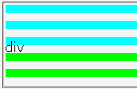
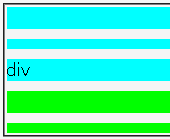

widthプロパティにauto以外の値を指定した要素ではheightプロパティの指定値に関わらず、ボックスの高さが文字の高さより小さくならない。ただし、内容物がコメントのみの要素を除く。
またline-heightプロパティを指定した内容物が存在しない要素でもheightプロパティの指定値に関わらず、ボックスの高さが文字の高さより小さくならない。ただし、内容物がコメントのみの要素を除く。
空色の背景を指定したdiv要素はwidthプロパティを指定した要素で発生するバグ、黄緑色の背景を指定したdiv要素はline-heightプロパティを指定した要素で発生するバグの例示です。すべてのdiv要素のボックスは高さが10pxになるはずです。
Netscape7.1標準モード
WinIE6.0標準モード